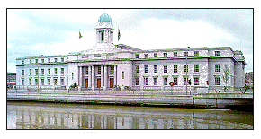

Shandon Church, St. Anne's Shandon dates 1722 but its tower was not erected until 1750. This is a very splendid Church with two limestone faces and two faces dressed in red sandstone. There are three terraced square towers topping it off which are very finely and gracefully proportioned. The steeple houses the famous bells of Shandon and the tower itself is one of the city's best-known landmarks. The tower is crowned with the gilt ball and a fish in the form of a salmon, thirteen feet in length. The church replaces an older church of St. Mary which was destroyed in the siege of 1690.

The foundation stone of the City Hall, erected on the site of the former building was laid by Mr. de Valera, president of the Executive Council of the State on the 9th July, 1932. The building consists of three sections, two wings comprising the Municipal Offices and an assembly hall, capable of seating 1,300 people. The first occupation of the building took place in March, 1935, when the staffs of a number of the Departments moved into the western wing. The first meeting of An Bardas was held in the new building on the 24th April, 1935. The building was formerly opened by the President on the 8th Sept., 1936.
The building is designed on classic lines to harmonise with the examples of eighteenth century architecture and the modern buildings, fundamentally Georgian in character, that so richly endow Cork City. It is an imposing and dignified structure, and, with its long main front dominating the river, immediately attracts attention by reason of the excellence of its proportion and the simplicity of its treatment. The facades are of dressed limestone from the Little Island (County Cork) Quarries. In connection with the stone work, which is a feature of the structure, one may perhaps specifically refer to the columns of the Doric order that grace the main and subsidiary porticos.
Busts, by Seamus Murphy, R.H.A., of Lord Mayors Tomas MacCurtain and Terence MacSwiney were unveiled in the vestibule by Comhairleoir S. MacCarthy, T.D., Lord Mayor, on 28th June, 1964. The main entrance to the offices is through a marble paved vestibule to the main staircase hall. The stairs are of polished marble and the balustrading of ornamental hammered wrought iron. On the first floor over the entrance are the principal departments which form the Lord Mayor's suite. The Council Chamber on the other side of the corridor is approached through a lobby. This Chamber is well conceived, being both lofty and spacious. It is naturally lighted from an ornamental dome. Galleries have been provided for distinguished visitors and the general public. Here much freedom has been displayed both in the decorative and plaster work and in the balustrading, the walls being in panelled mahogany. The furnishing of the chamber is also of mahogany to the Architect's designs.
A plaque, by Seamus Murphy, R.H.A., bearing a profile of the late President Kennedy erected over the main entrance door of the City Hall vestibule was unveiled by the Lord Mayor, Comhairleoir S. MacCarthy, T.D., on 29th June, 1964.
Another plaque by Seamus Murphy, R.H.A., lists the first members of Council of the County Borough of Cork to be a Republican Majority.
A Visitor's Book listing recipients of the Freedom of the City is available for inspection by interested parties.